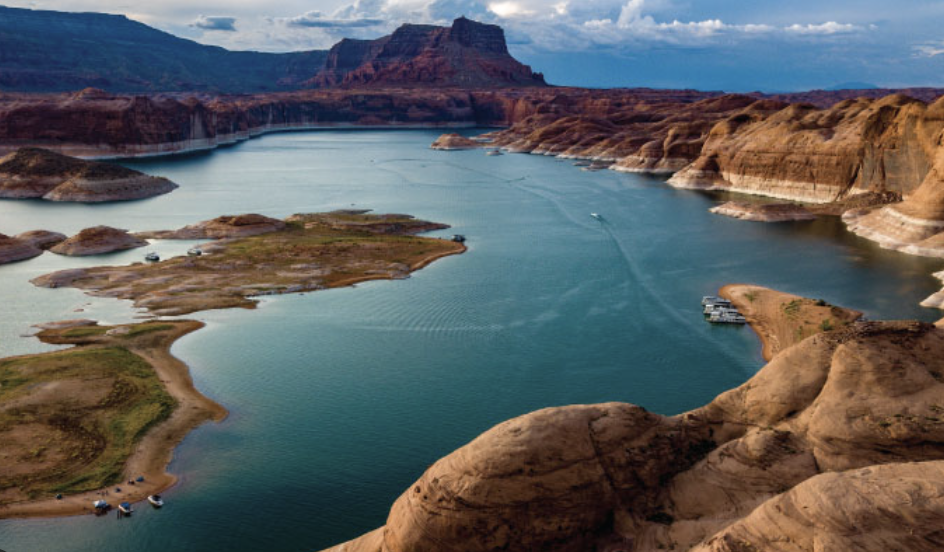
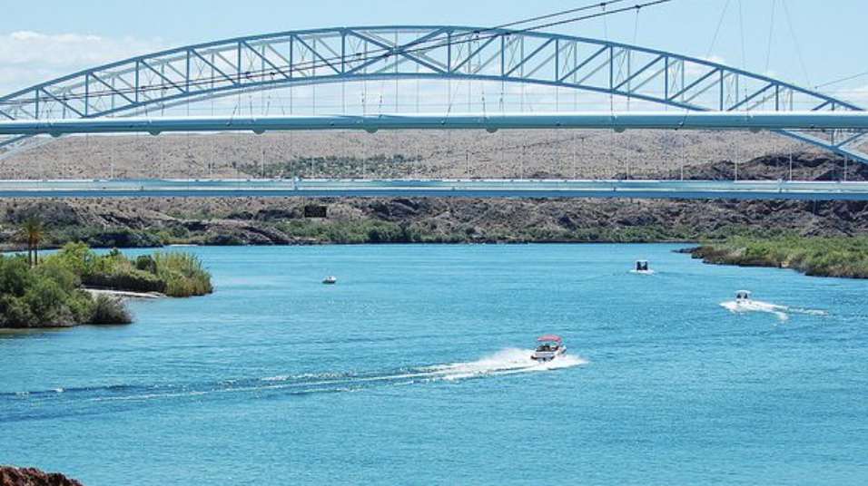

Senators Wash Adventure

Discover the tranquility of the Colorado River's teal waters and bask in the desert sun while wakeboarding and wakesurfing. Embrace the oasis vibes and enjoy thrilling rides amidst nature's serene beauty.
Lake Powel Adventure 
Explore Lake Powell's beauty on an exhilarating wakeboarding adventure. Glide through clear waters, surrounded by towering red rock cliffs. Guided by experts and equipped with top gear, it's the ultimate thrill in a breathtaking setting.
Park Moabi Adventure 
Dive into the excitement of wakeboarding at Park Moabi along the Colorado River! Glide across the river's serene waters, framed by stunning desert landscapes. Expert instruction and pristine conditions ensure an unforgettable adventure.